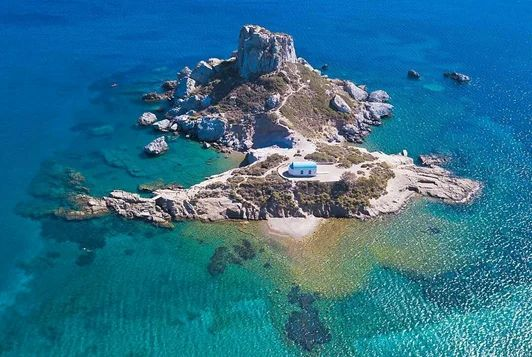
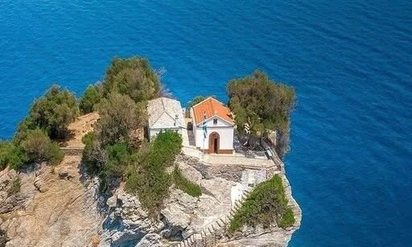
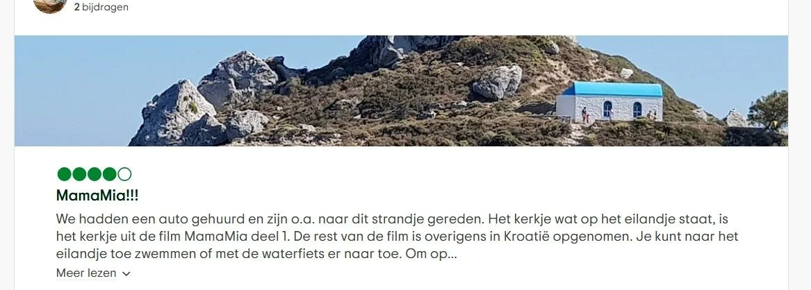

Helaas – niet op Kos
Denk je het beroemde Mamma Mia-kerkje op Kos te vinden? Helaas, dat is een groot misverstand. Er wordt nog steeds verteld (o.a. door touroperators) dat het kerkje in Kefalos staat.
Helaas – dat is een hardnekkig misverstand.

Denk je het beroemde Mamma Mia-kerkje op Kos te vinden? Helaas, dat is een groot misverstand. Er wordt nog steeds verteld (o.a. door touroperators) dat het kerkje in Kefalos staat.

Er zijn veel fotoalbums en video’s van “het Mamma Mia-kerkje op Kos”. Het is misschien een kerkje op een rots, maar daar houdt de vergelijking op.

Het echte kerkje is Agios Ioannis Kastri op het eiland Skopelos. Daar werden de bruiloftsscènes van de film opgenomen.
📍 Locatie echte Mamma Mia-kerkje (Skopelos) ↗ ▶ Video: Mamma kerkje op kosYouTubeSorry – that’s a stubborn myth.
Looking for the famous Mamma Mia church on Kos? Unfortunately, that’s a big misunderstanding. It’s still claimed (including by some tour operators) that the church is in Kefalos.
There are plenty of photo albums and videos of “the Mamma Mia church on Kos”. It may be a church on a rock – but that’s where the comparison ends.
The real church is Agios Ioannis Kastri on the island of Skopelos. That’s where the wedding scenes from the film were shot.
📍 Real Mamma Mia church location (Skopelos) ↗ ▶ Video: church kosYouTubeLeider – das ist ein hartnäckiger Irrtum.
Die berühmte Mamma-Mia-Kirche steht nicht auf Kos (auch nicht in Kefalos), obwohl manches Tourangebot das behauptet.
Viele Fotos und Videos behaupten das Gegenteil – ein Kirchlein auf einem Felsen reicht aber nicht als Beweis.
Die echte Kirche ist Agios Ioannis Kastri auf Skopelos – dort wurden die Hochzeitsszenen gedreht.
📍 Echte Mamma-Mia-Kirche (Skopelos) ↗ ▶ Video: Kirche kosYouTubePurtroppo – è un grosso equivoco.
La famosa chiesetta di Mamma Mia non si trova a Kos (né a Kefalos), anche se alcuni tour lo raccontano ancora.
Ci sono tanti album e video che lo sostengono – una chiesetta sulla roccia non basta a fare il confronto.
La chiesa vera è Agios Ioannis Kastri sull’isola di Skopelos, dove sono state girate le scene del matrimonio.
📍 Chiesetta vera di Mamma Mia (Skopelos) ↗ ▶ Video: chiesetta kosYouTubeMaalesef – bu yanlış bir inanış.
Ünlü Mamma Mia kilisesi Kos’ta (Kefalos’ta da) yok. Bazı tur operatörleri hâlâ öyle anlatıyor.
Birçok fotoğraf ve video “Kos’taki Mamma Mia kilisesi” diyor – kayalıkta bir kilise olmak yetmez.
Gerçek kilise Skopelos adasındaki Agios Ioannis Kastri. Filmdeki düğün sahneleri orada çekildi.
📍 Gerçek Mamma Mia kilisesi (Skopelos) ↗ ▶ Video: kos kilisesiYouTubeLo siento – es un mito muy extendido.
La famosa iglesia de Mamma Mia no está en Kos (ni en Kefalos), aunque algunos tours siguen diciéndolo.
Hay muchos álbumes y vídeos que lo afirman – una iglesita en una roca no basta para la comparación.
La iglesia de verdad es Agios Ioannis Kastri en la isla de Skopelos, donde se rodaron las escenas de la boda.
📍 Iglesia real de Mamma Mia (Skopelos) ↗ ▶ Vídeo: iglesia kosYouTube